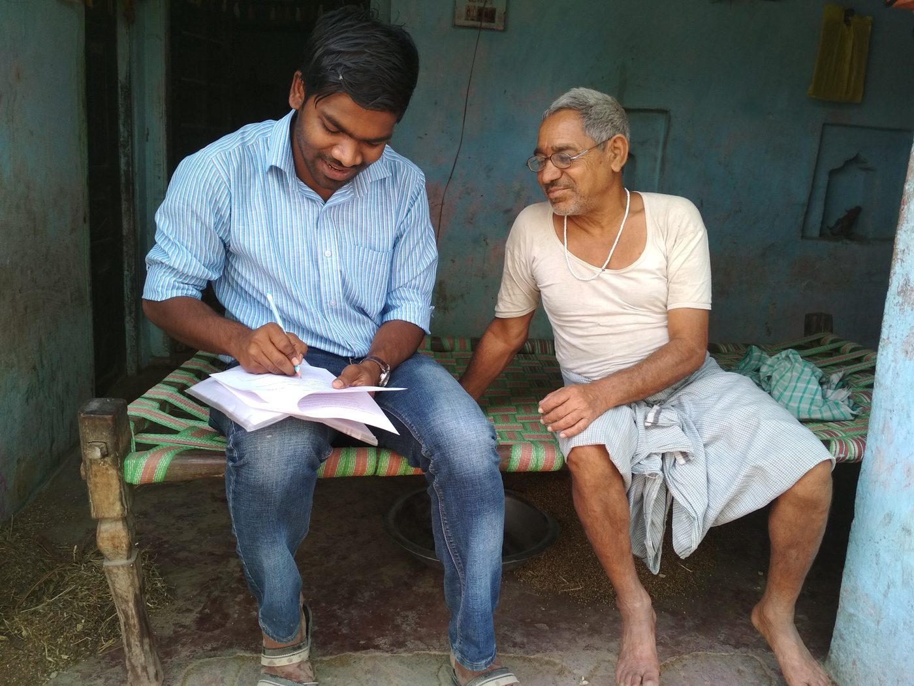
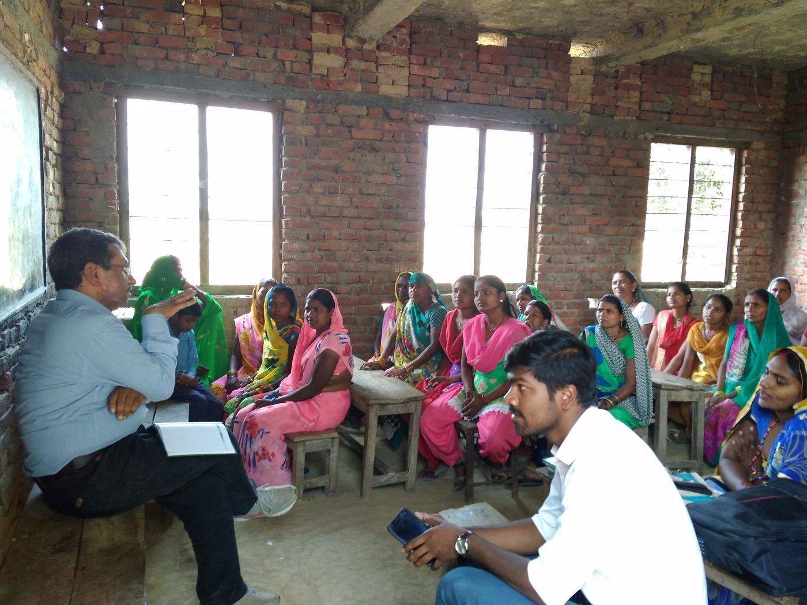
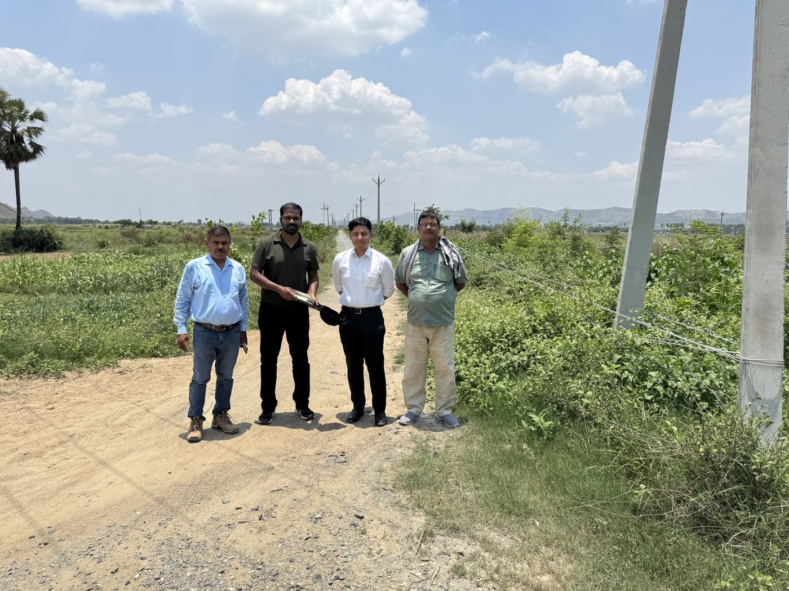
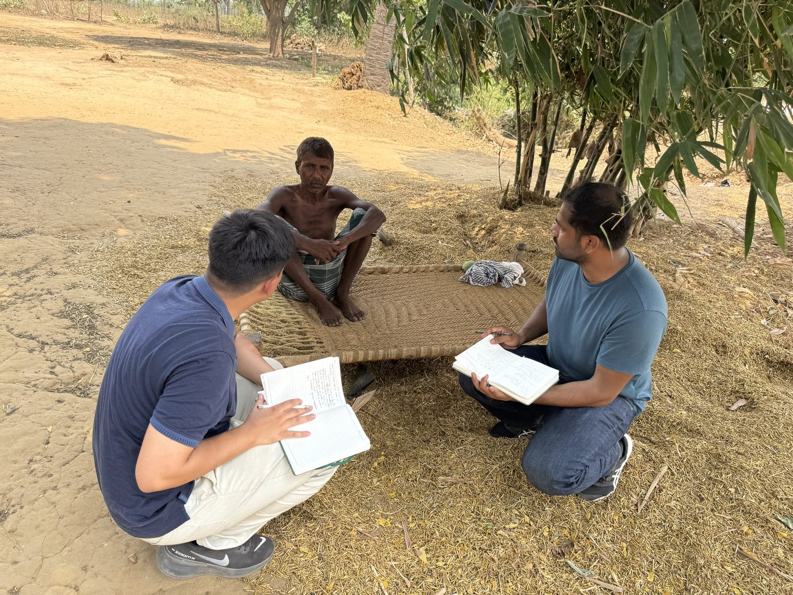
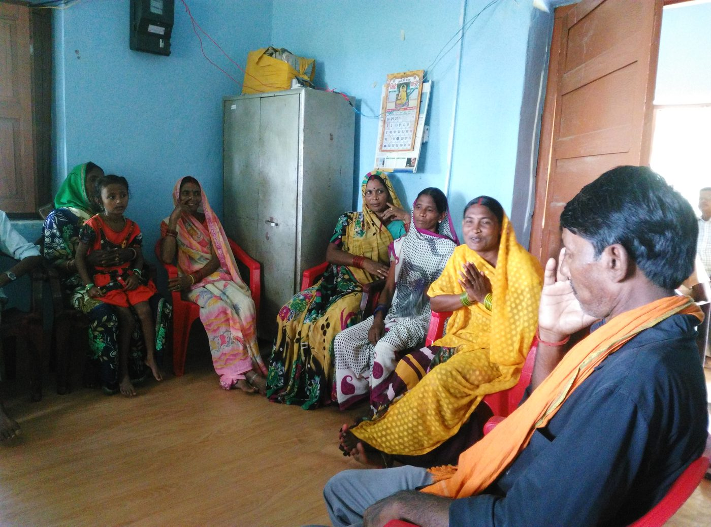
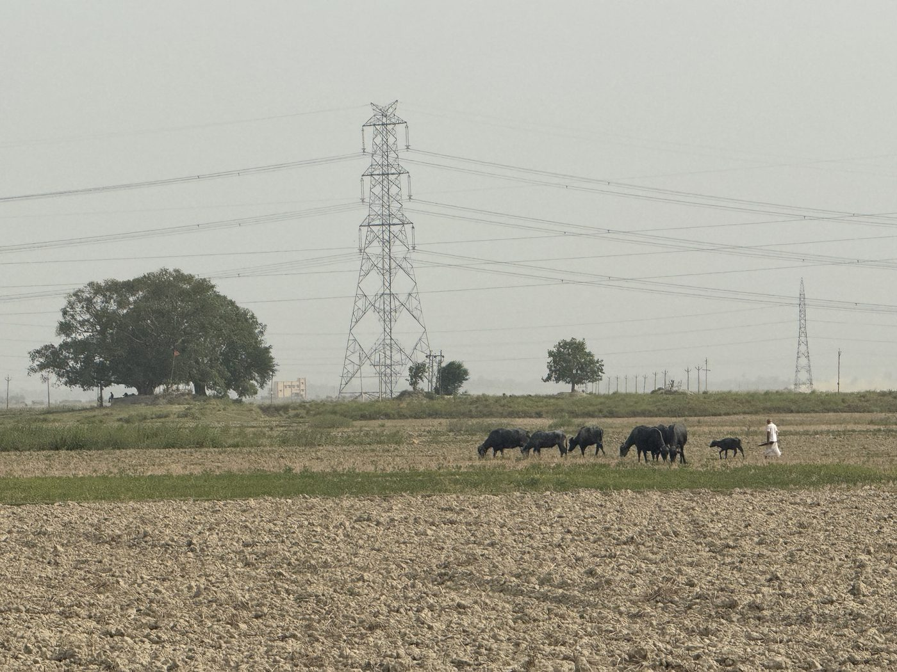
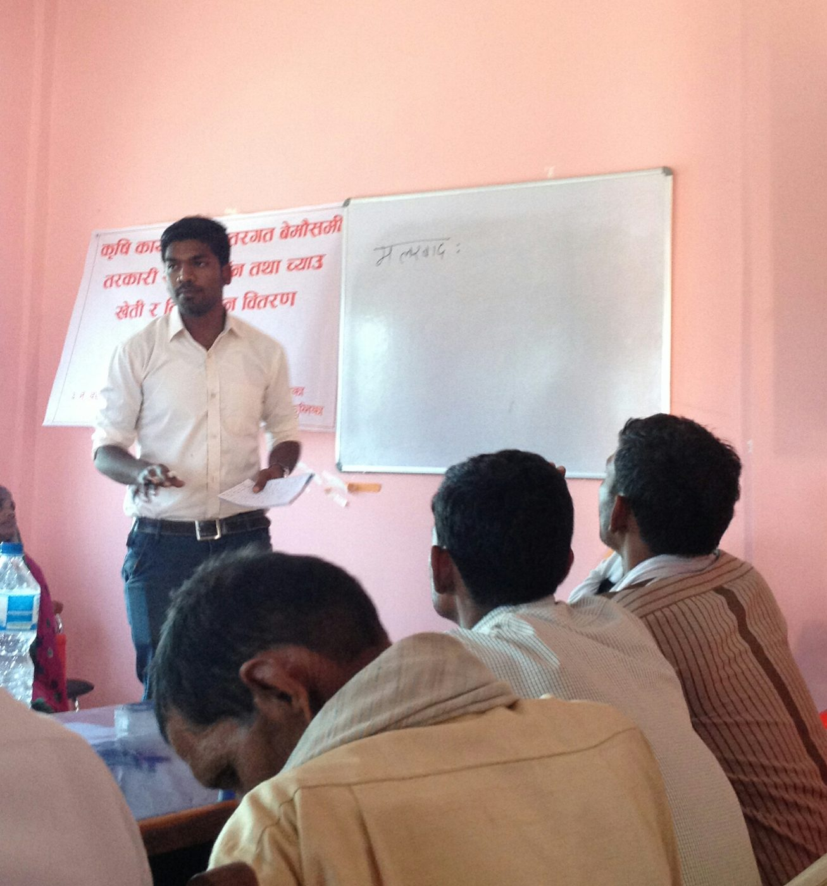
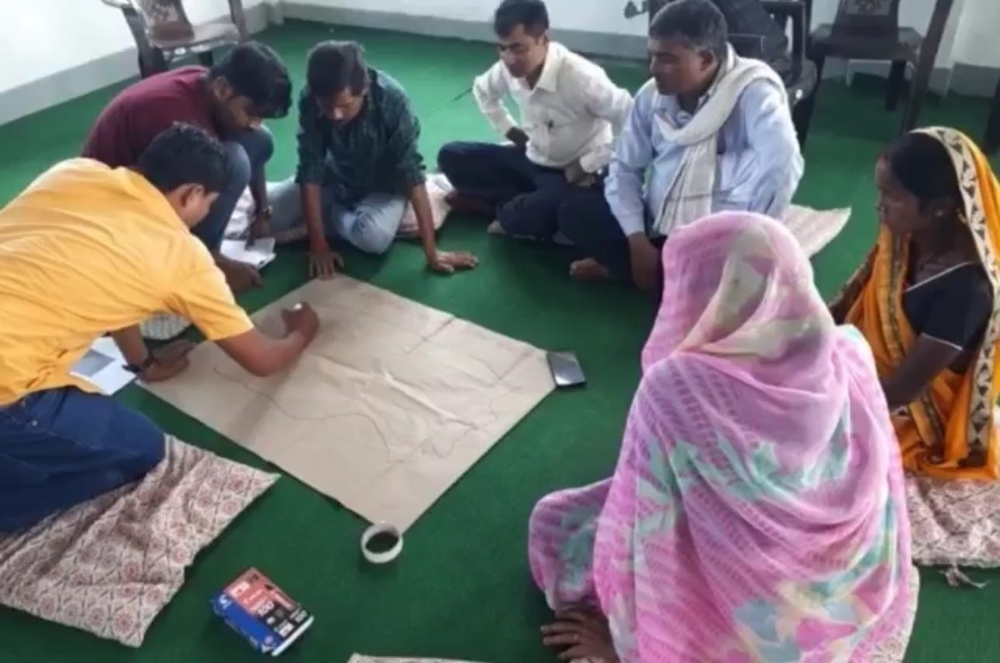
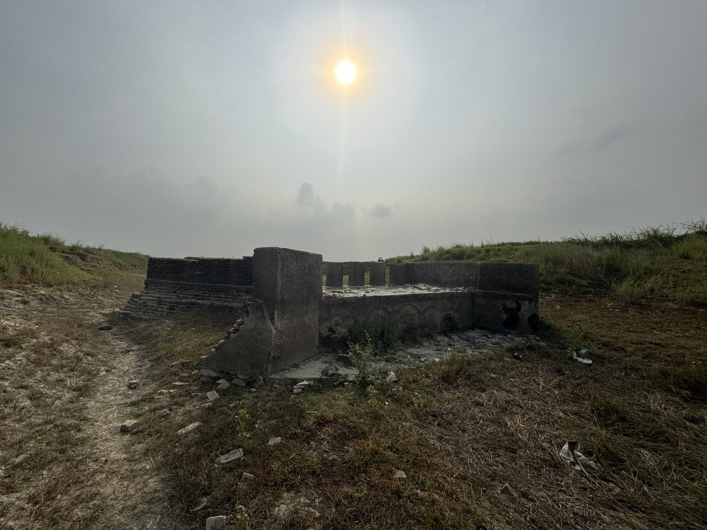

Fieldwork
My research is grounded in primary data collection. Across rural Nepal and Bihar, India, I have conducted household surveys, focus group discussions, and key-informant interviews on agriculture, irrigation, and rural livelihoods. A few moments from the field:








